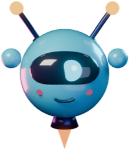

Kuvo ile İngilizce
Söyle, Patlat, Öğren! Çocuklar için sesle oynanan uzay temalı İngilizce kelime oyunu.

Destek ve İletişim
Bir sorun mu yaşadın, bir önerin mi var? Bize yaz, en geç 2 iş günü içinde yanıt veriyoruz.
firstmakeitexist@gmail.comSık Sorulan Sorular
Oyun nasıl oynanır?
Roketi parmağınla sağa sola kaydırıp ekranın üstündeki Türkçe kelimenin İngilizce harflerini sırayla topla. Yanlış harflerden ve dikenli mayınlardan kaç. Bölüm sonunda Mutor'un göktaşlarında yazan Türkçe kelimenin İngilizcesini yüksek sesle söyle, lazer ateşlensin!
Ses tanıma çalışmıyor.
- Ayarlar → Kuvo bölümünde Mikrofon ve Konuşma Tanıma izinlerinin açık olduğundan emin ol.
- Ayarlar → Genel → Klavye → Dikte açık olmalı. İngilizce dil paketi bir kez indirildikten sonra tanıma internetsiz çalışır.
- Sessiz bir ortamda, telefonu ağzına çok yakın tutmadan, net bir sesle söyle.
- İzin verilmezse oyun dokunarak da oynanabilir: doğru kelimeye dokunman yeterli.
Hangi seviyeler var?
A1 (Başlangıç), A2 (Temel), B1 (Orta), B2 (İyi) ve C1 (İleri). Toplam 3000'den fazla kelime ve 1000'den fazla bölüm. Kelimeler giderek zorlaşır ve aynı kelime tekrar gelmez.
Kuvo Premium nedir?
Her seviyenin ilk 5 bölümü ücretsizdir. Tüm bölümleri açmak için aylık otomatik yenilenen Kuvo Premium aboneliği gerekir. Fiyat uygulama içinde ve App Store'da gösterilir. Satın alma ekranları ebeveyn doğrulamasıyla korunur.
Aboneliği nasıl iptal ederim?
iPhone'da Ayarlar → [adın] → Abonelikler → Kuvo yolunu izle ve Aboneliği İptal Et'e dokun. İptal, mevcut dönemin sonunda geçerli olur. Dönem bitiminden en az 24 saat önce iptal edilmezse abonelik otomatik yenilenir.
Satın aldığım abonelik görünmüyor.
Abonelik ekranında ebeveyn doğrulamasından sonra Geri yükle'ye dokun. Aynı Apple Kimliği ile giriş yaptığından emin ol.
Para iadesi alabilir miyim?
Ödemeler Apple tarafından işlenir. İade talepleri için reportaproblem.apple.com adresini kullanabilirsin.
Ailemle paylaşabilir miyim?
Evet. Kuvo Premium, Aile Paylaşımı ile ailendeki diğer cihazlarda da kullanılabilir.
İlerlememi kaybettim.
İlerleme yalnızca cihazda saklanır. Uygulama silinirse ilerleme de silinir; aboneliğin ise Geri yükle ile geri gelir.
Support & Contact (English)
Kuvo is a voice-played, space-themed English vocabulary game for children aged 6–12. No ads, works offline, collects no data.
Questions, problems or suggestions? Email us. We reply within 2 business days.
firstmakeitexist@gmail.comSpeech recognition doesn't work
Allow Microphone and Speech Recognition in Settings → Kuvo, and make sure Dictation is enabled. Without permission the game can be played by tapping the correct word.
Subscription
The first 5 stages of each level are free. Kuvo Premium is a monthly auto-renewable subscription that unlocks all stages. Cancel any time in Settings → [your name] → Subscriptions at least 24 hours before the end of the current period. To restore a purchase, tap Restore on the subscription screen. Refunds are handled by Apple at reportaproblem.apple.com.